New bright themes
Light Aqua in org.jvnet.substance.theme.SubstanceLightAquaTheme
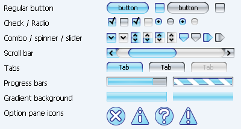
SunGlare in org.jvnet.substance.theme.SubstanceSunGlareTheme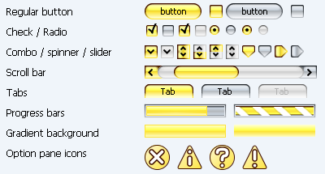
Sunset in org.jvnet.substance.theme.SubstanceSunsetTheme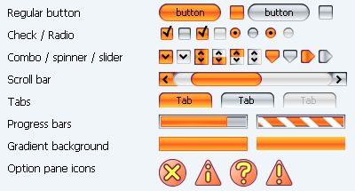
Bottle Green in org.jvnet.substance.theme.SubstanceBottleGreenTheme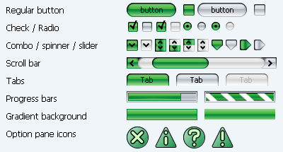
Raspberry in org.jvnet.substance.theme.SubstanceRaspberryTheme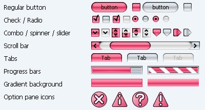
Barby Pink in org.jvnet.substance.theme.SubstanceBarbyPinkTheme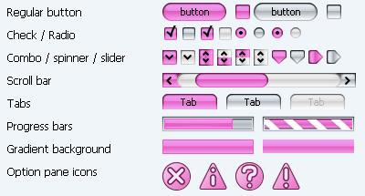
In addition, the Lime Green scheme has been brightened: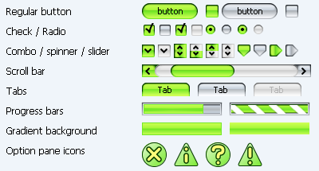
New cold themes
Steel Blue in org.jvnet.substance.theme.SubstanceSteelBlueTheme
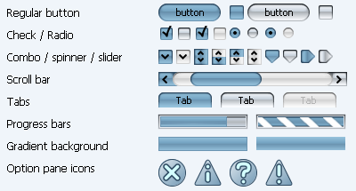
Sepia in org.jvnet.substance.theme.SubstanceSepiaTheme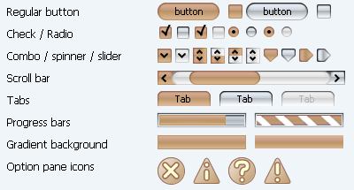
Terracotta in org.jvnet.substance.theme.SubstanceTerracottaTheme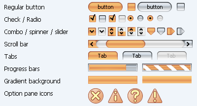
Olive in org.jvnet.substance.theme.SubstanceOliveTheme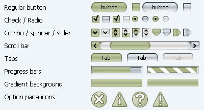
New dark themes
Ebony in org.jvnet.substance.theme.SubstanceEbonyTheme
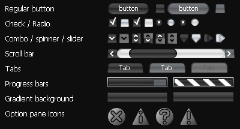
Charcoal in org.jvnet.substance.theme.SubstanceCharcoalTheme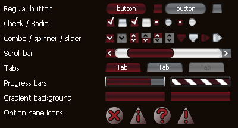
Dark violet in org.jvnet.substance.theme.SubstanceDarkVioletTheme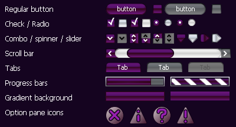
Watermarks
Stripes in org.jvnet.substance.watermark.SubstanceStripesWatermark Katakana in org.jvnet.substance.watermark.SubstanceKatakanaWatermark
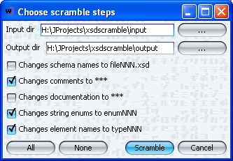
Bubbles in org.jvnet.substance.watermark.SubstanceBubblesWatermark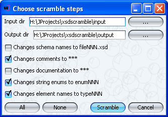
Crosshatch in org.jvnet.substance.watermark.SubstanceCrosshatchWatermark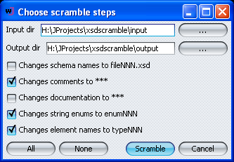
Binary in org.jvnet.substance.watermark.SubstanceBinaryWatermark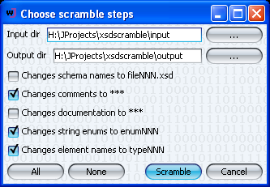
Mosaic in org.jvnet.substance.watermark.SubstanceMosaicWatermark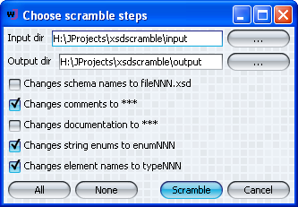
Latch in org.jvnet.substance.watermark.SubstanceLatchWatermark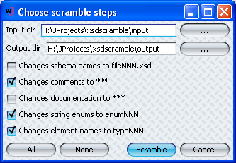
Metal Wall in org.jvnet.substance.watermark.SubstanceMetalWallWatermark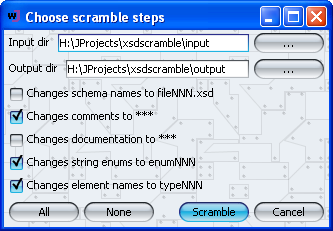
Image (local and HTTP) in org.jvnet.substance.watermark.SubstanceImageWatermark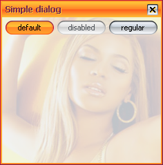 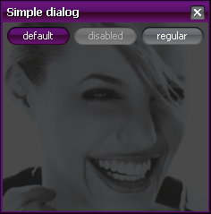
Color chooser
Color Wheel and Color Sliders:
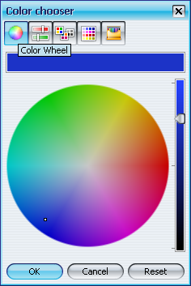 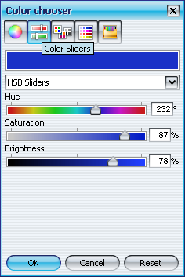
Color Palettes and Color Swatches: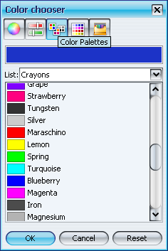 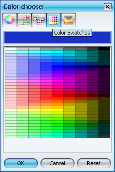
Crayons: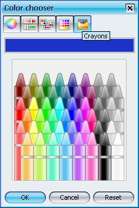
Striped default renderers
List (one with default background and one with pink background) and ComboBox with pink background:
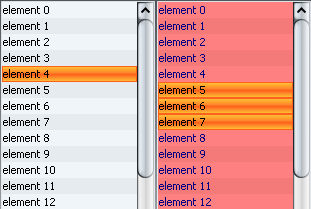 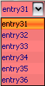
Table (note that the last column has custom renderer without striped background):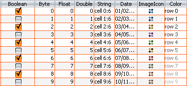
Internal frames and desktop icons
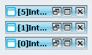
Desktop icons are translucent showing other desktop icons and open internal frames: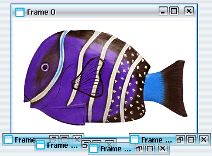
Hovering the mouse pointer over desktop icon shows preview snapshot of the corresponding internal frame when it was minimized: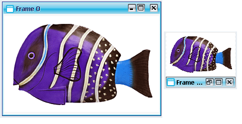
Large and vertical buttons
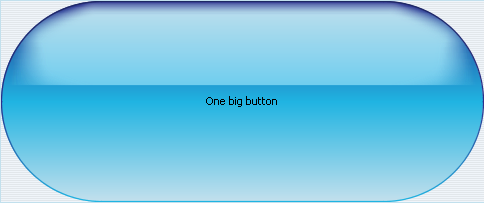
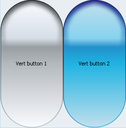
Menu search
NetBeans menubar after opening menu search and searching for file string (note the tooltip):

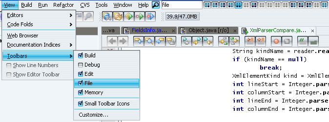
Button strip component

Ribbon component
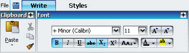
Tree colors
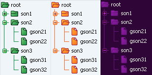
Theme editor
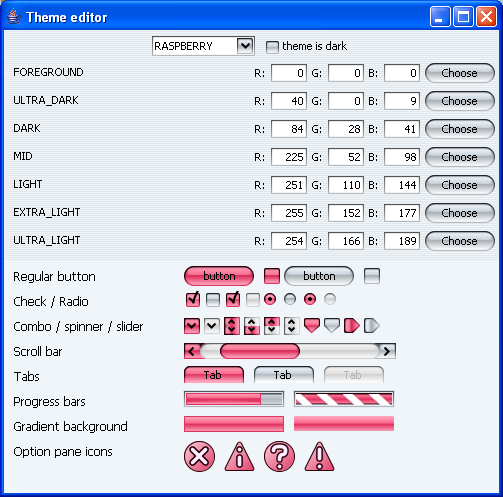